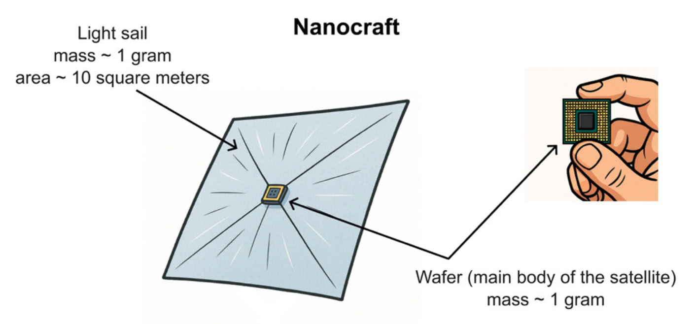
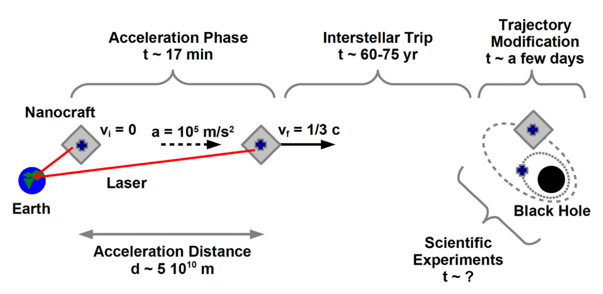

Research
A Space Mission to Earth’s Nearest Black Hole
The Population of Nearby Black Holes
Our Galaxy is home to between one hundred million and one billion black holes, formed from the gravitational collapse of massive stars. Most of these objects are expected to be isolated, meaning they have no companion. Among black holes that do exist in binary systems, the majority are thought to be paired with another black hole, while systems consisting of a black hole and a normal star are likely rare.
Simple estimates suggest that within 15 parsecs (about 50 light-years) of the Solar System, there could be a few isolated black holes. In this local region, 80-95% of the volume is filled with a hot, low-density interstellar medium. The remaining 5-20% is occupied by a complex of 15 warm, partially ionized clouds. If an isolated black hole were located inside one of these clouds, it could produce detectable electromagnetic emission through accretion from the interstellar medium. Outside these clouds, however, the accretion rate would likely be too low to generate a signal detectable by current or near-future observational facilities (Nosirov et al, arXiv:2601.14499).
One of our primary goals is to identify a black hole within 15 parsecs of the Solar System.
A Mission to a Nearby Black Hole
If we succeed in finding a black hole within 15 parsecs of the Solar System, and if we develop probes capable of traveling at a significant fraction of the speed of light, we could consider an interstellar mission to such a black hole. This would allow us to perform precise and accurate tests of General Relativity in the strong-field regime (Bambi, iScience, 28, 113142, 2025).
Chemically propelled rockets are clearly unsuitable for such a mission. Today, the most promising option for interstellar travel is the development of tiny, light sail-propelled spacecraft known as nanocrafts.
A nanocraft is a gram-scale spacecraft consisting of two main components: a gram-scale wafer and a light sail (see figure below). The wafer serves as the main body of the spacecraft and functions as a fully equipped space probe, containing a computer processor, solar panels, and navigation and communication equipment. The light sail is an extremely thin, meter-scale dielectric metamaterial. Ground-based high-power lasers can accelerate the nanocraft by pushing against the sail with their beams, enabling it to reach velocities up to a substantial fraction of the speed of light.
If a suitable black hole is located 20 light-years from the Solar System and the nanocraft can travel at one-third the speed of light, it could reach the black hole in about 60 years, conduct a series of scientific experiments, and transmit the data back to Earth. The entire mission would last around 80 years, but in return, we would gain invaluable insights into black holes and General Relativity that might be difficult or impossible to obtain by other means.

